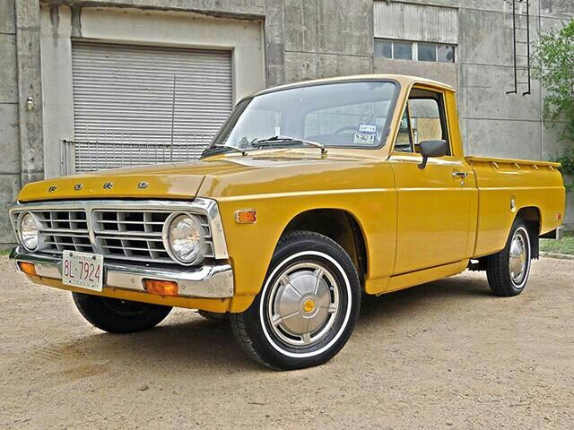

A história completa da caminhonete média representante da Ford no Brasil.
As crises do petróleo de 1973 e 1979 foram mesmo decisivas para readequar os hábitos do consumidor norte-americano de automóveis. Com o preço da gasolina nas alturas e a entrada de limites legais para o consumo de combustível (programa CAFE), os grandes carros com motor V8 perderam espaço e chegaram perto da extinção. No caso das picapes, a demanda por modelos mais econômicos levou à criação do segmento médio — compacto para o padrão deles —, que teve na Ford Ranger um dos principais representantes.

Ford Courier modelo 1974, antecessora da Ford Ranger
Primeira geração da Ford Ranger Americana
Concorrente das picapes também japonesas da Nissan e da Toyota, ela atendia razoavelmente a quem buscava um utilitário econômico. Como curiosidade, o Japão a fornecia sem caçamba, o que evitava o pesado imposto de 25% para picapes conhecido como Chicken Tax ou imposto do frango — uma retaliação comercial dos EUA à França e à Alemanha, que em 1964 haviam elevado tributos sobre o frango exportado pelos norte-americanos. Após a importação a caçamba era acrescentada, o que permitia imposto de apenas 4%.
Enquanto a GM desenvolvia a própria picape média, que se tornaria a primeira S-10, a Ford trabalhava no projeto da Ranger — ambas concebidas no próprio país, portanto mais adequadas às preferências e ao tipo de uso locais que os modelos fornecidos pelo Japão. A Ranger aparecia nas concessionárias em março de 1982 como modelo 1983, com linhas retas que lembravam as da Série F e permitiam bom coeficiente aerodinâmico (Cx) para o tipo de veículo, 0,45. Seu nome, que significa em inglês o equivalente a um guarda florestal, não era inédito na Ford: fora usado nos anos 70 em uma versão de acabamento da Série F e do Bronco.
Mais leve (a partir de 1.150 kg) e compacta, destinada a aplicações urbanas e serviços menos exigentes, a Ranger mantinha parte dos atributos que levaram a Série F à liderança do mercado. Contudo, a pressa para o lançamento deixou a picape com poucas opções iniciais: cabine simples, tração traseira, dois comprimentos de caçamba (1,5 e 1,8 metro) e dois motores a gasolina, ambos com comando de válvulas no cabeçote e carburador. O de 2,0 litros fornecia 73 cv, ante 80 cv do 2,3 que era exportado de Taubaté, SP. A transmissão manual de quatro marchas equipava ambos, mas o 2,3 podia receber uma automática de três.
Sem a opção V6 que a S-10 oferecia, desempenho não era a prioridade da Ford, como observou em teste a revista Motor Trend: “O número de controle para o programa Ranger foi o consumo em cidade entre 26 e 28 milhas por galão (10,9 e 11,8 km/l), não a aceleração ou a velocidade máxima. Assim, nem o motor 2,0 nem o 2,3 tem grande desempenho”. O teste indicou aceleração de 0 a 96 km/h em 14,8 segundos para a 2,0 manual ante 12,7 s da S-10 V6 automática.